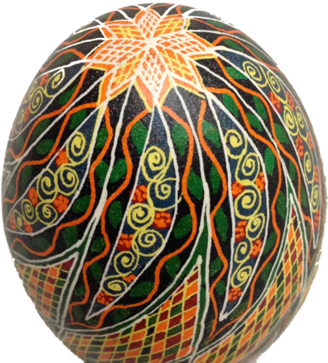
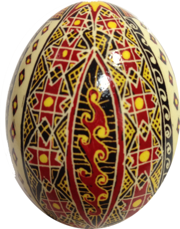

Писанка
Пи́санка — яйце, декороване традиційними символами, які намальовані за допомогою воску й барвників. Писанка — символ Сонця; життя, його безсмертя; любові і краси; весняного відродження; добра, щастя, радості. (Вікіпедія)
Pysanka
A pysanka (Ukrainian: писанка, plural: pysanky) is a Ukrainian Easter egg, decorated with traditional Ukrainian folk designs using a wax-resist (batik) method. The word pysanka comes from the verb pysaty, "to write", as the designs are not painted on, but written with beeswax. (Wikipedia)

プィーサンカ
プィーサンカ（ウクライナ語：Писанка）は、ウクライナの特産品、蝋結染め（バティック）技術によって装飾された卵である。古代ウクライナの迎春祭の象徴物であったが、11世紀以後キリスト教の復活祭に用いるイースター・エッグとなった。古代スラヴ人の文化の影響を受けたウクライナの隣国にも用いられる （ウィキペディア）

Символіка писанки
Дослідники вважають, що українська писанка має понад 100 символічних малюнків. Наприклад, кривулька знаменувала нитку життя, вічність сонячного руху. Кривулька або безконечник — це символ початку і кінця. Тригвер або триніг символізував, на думку одних, небо, землю і повітря, на думку інших — повітря, вогонь і воду, треті вважали його символом життя людини. Четверті трактували його як символ неба, землі і пекла. Символічне навантаження мала і кольорова гама писанки. Червоний колір усимволізовував радість життя, любов, жовтий — місяць і зорі, урожай; зелений — багатство, буяння рослинного світу, його воскресіння; блакитний — чисте небо, здоров'я; бронзовий — матінку-землю; чорний з білим — пошану до померлих родичів, їхніх душ та ін. (Вікіпедія)
分類
ウクライナにおいて、蝋結染め技術で装飾された卵のすべては「プィーサンカ」と呼ばれる。地方によって蝋結染め技術の多少の差異が見られ、その差異に応じて名称も異なることもある。 (クラーシャンカ, プィーサンカ, クラーパンカ, リャーパンカ, マリョーヴァンカ, ルィストーヴァンカ)。（ウィキペディア）


第３ イースタープィサンキのワークショップ (渋谷)
皆様へ、プィサンキのワークショップを開催します。このクラスではウクライナで代々、何千年もの歴史をへて受け継がれてきたエッグアートのテクニックを学ぶ事ができます。自分だけのオリジナルプィサンキを作ってみませんか？
もし参加に興味がございましたら、お電話でご予約ください。
電話番号：090-9318-3293 コヴァリョヴァ ナタリャ, 090-8119-0423 リセンコ ナタリャ
- 2 F, 30-2 東京都, 渋谷区、桜ヶ丘町
- 2015年3月29日、日曜, 13:30 から 16:30 まで
- 3000 円
「マイステル」プロジェクトはウクライナの伝統的な芸術や工芸品のプロモーションに専念しています。私たちのプロジェクトは日本人やウクライナ人、日本在留中のウクライナ人のアーティストをターゲットとしています。
このプロジェクトはプィーサンカやプィーサンカのアートで始まります。プロジェクトが続くにつれて、「モタンカ」人形、「ペトリキヴカ」風の絵画、ウクライナのレシピ等と他のセクションへと広がります。
ウェブページ「http://maister.co」は英語、日本語、ウクライナ語の三ヶ国語で形成され、大部分は全三ヶ国語に翻訳されています。
このプロジェクトはOSSが原理で作られており、 Open Source ソフトウェアが使われています。私たちはソフトウェアの開発者やデザイナー、翻訳者やウクライナのアーティスト等、多くの分野からの参加者やパートナーをご招待致します。